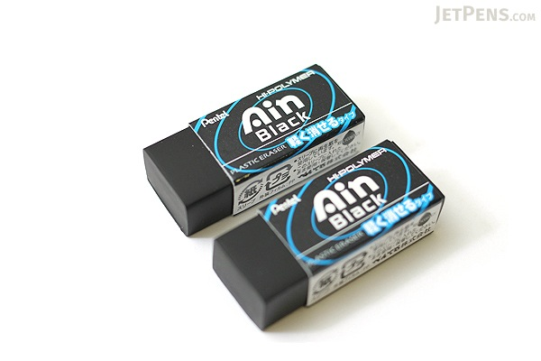
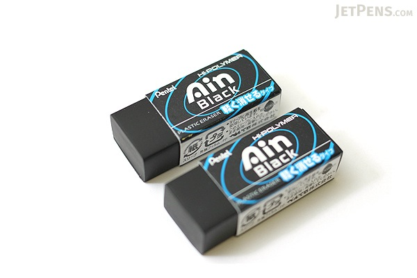
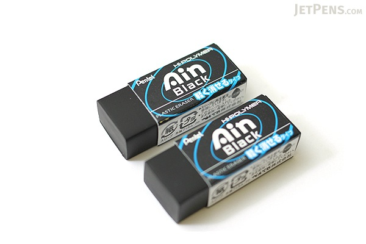

PENTEL HI-POLYMER AIN ERASER
$1.2
☆ ☆ ☆ ☆ ☆

PENTEL HI-POLYMER AIN ERASER
$1.2
☆ ☆ ☆ ☆ ☆
This high-quality plastic eraser from Pentel is hard to find in the US. It consists of special polymer material that causes less abrasion on paper and produces less dust, enabling the eraser to be used for a longer period of time with cleaner results.